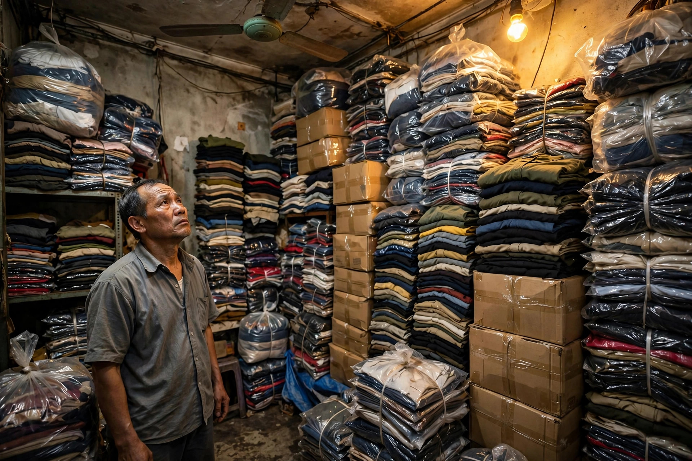
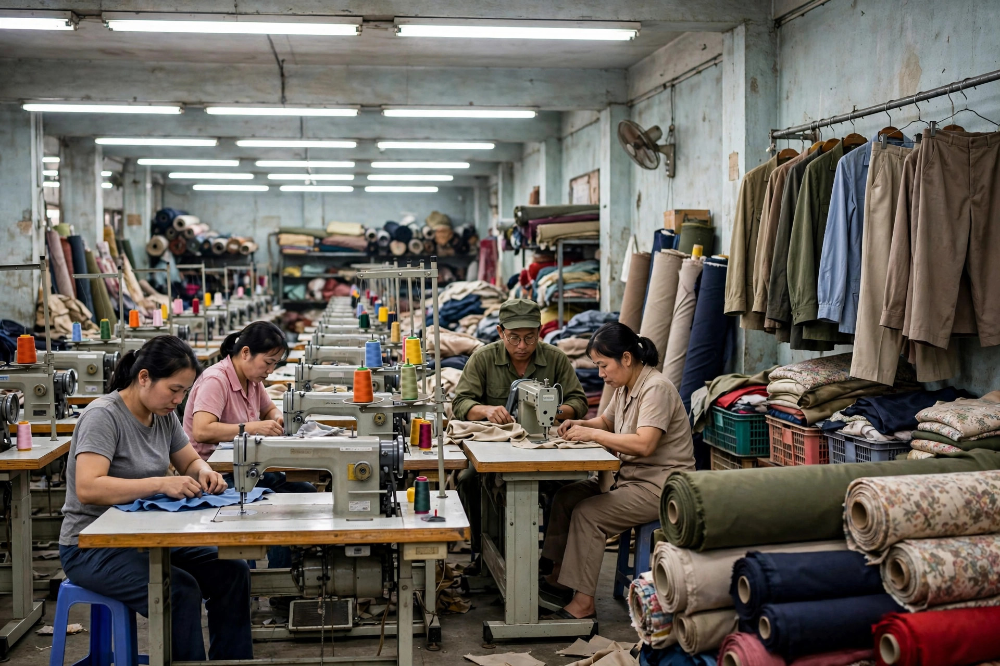

Tác giả: Ban biên tập Ver2Solution — Bài đăng 10/11/2026 — 10 phút đọc — Chuyên mục: Thị trường
1. Tồn kho đọng vốn, cuối năm phải xả
Cứ tới cuối năm, câu chuyện quen thuộc lại lặp lại ở các shop nhỏ: kho đầy hàng hè chưa bán hết, hàng thu mới đã về, mà tiền nhập đợt sau thì chưa có vì vốn còn nằm trong hàng chưa bán. Hàng tồn kho không chỉ là hàng chưa bán — nó là tiền mặt đang bị "đóng băng". Đó là lý do cách xả hàng tồn kho luôn là bài toán nóng nhất của shop vào dịp cuối năm.

Xả chậm thì thiệt đủ đường: tốn tiền kho cho hàng không sinh ra đồng nào, hàng lỗi mốt theo mùa nên càng để càng khó bán đúng giá, và mất luôn đợt khách mua sắm cuối năm — đúng lúc nhu cầu tìm hàng tồn kho giá rẻ tăng mạnh. Trước đây, shop xả lô thường chỉ đăng lên nhóm mua bán hay nhờ người quen. Nay Ver2Solution thêm chợ xả kho, xưởng may và kiot thanh lý, nơi shop tự đăng tin, tin được duyệt rồi hiện ngay cho người cần mua thấy. Muốn xả nhanh, trước hết shop cần biết cách xả hàng tồn kho đúng chỗ, đúng người mua.
2. Ba loại tin là gì

2.1. Lô xả kho
Lô xả kho là tin bán sỉ một lô hàng tồn theo số lượng lớn, có giá rõ ràng theo từng đơn vị và tổng số lượng món trong lô. Đây là loại tin dành cho shop cần cách xả hàng tồn kho theo lô: ví dụ một shop thời trang xả 300 món còn mới, ghi rõ giá theo cái và số lượng tách lô tối thiểu. Người mua lô thường là shop khác đang tìm nguồn hàng giá sỉ.
2.2. Xưởng may
Tin xưởng may dành cho chủ xưởng muốn tìm khách đặt gia công. Tin xưởng không bán hàng có sẵn mà bán năng lực sản xuất: mặt hàng gia công được (ví dụ áo thun, đồ công sở, hoodie), số lượng tối thiểu mỗi mẫu, địa chỉ xưởng và mô tả năng lực: số máy, số công nhân, thời gian giao hàng. Người tìm xưởng thường là shop muốn đặt may mẫu riêng. Một tin xưởng tốt không cần nhiều ảnh, nhưng cần ghi rõ mặt hàng và số lượng tối thiểu — vì với xưởng, cách xả hàng tồn kho chính là bán chỗ trống trên chuyền may.
2.3. Kiot thanh lý
Tin kiot thanh lý dành cho chủ cửa hàng cần sang nhượng: sang mặt bằng, sang toàn bộ cửa hàng kèm đồ đạc, hoặc thanh lý hàng tồn kho của cả cửa hàng. Tin kiot ghi giá sang nhượng tổng, diện tích, tiền thuê mỗi tháng, vị trí và hiện trạng đồ đạc. Đây cũng là cách thanh lý hàng tồn kho của cả một cửa hàng khi chủ shop muốn chuyển hướng kinh doanh — một cách xả hàng tồn kho trọn gói, bán một lần cả cửa hàng thay vì xả từng lô nhỏ. Tin kiot càng cần ảnh thật đầy đủ: mặt tiền, bên trong, đồ đạc đi kèm.
3. Hướng dẫn đăng tin trong 3 bước
Bước 1 — Đăng ký tài khoản Doanh nghiệp
Trước hết, shop cần có tài khoản Doanh nghiệp hoặc Tổ chức trên Ver2Solution. Nếu shop đang dùng tài khoản Cá nhân (loại dành cho mẫu livestream tìm việc), tài khoản đó không đăng được tin lô, xưởng hay kiot — cần đăng ký thêm tài khoản Doanh nghiệp mới. Đây là bước đầu tiên của cách xả hàng tồn kho bằng tin tự đăng: tin cần gắn với một shop có tên tuổi, liên hệ rõ ràng để người mua yên tâm.
Bước 2 — Tạo hồ sơ shop
Sau khi có tài khoản Doanh nghiệp, shop tạo hồ sơ shop — tên shop, ngành hàng và thông tin liên hệ — rồi gửi chờ duyệt. Mọi tin đều gắn với hồ sơ shop đã duyệt, để người mua thấy rõ tin này của shop nào và liên hệ ai. Hồ sơ shop chỉ cần duyệt một lần; sau đó shop đăng bao nhiêu tin cũng được, trong giới hạn tối đa 5 tin mới mỗi ngày — mỗi tin là một cách xả hàng tồn kho tới đúng người đang cần hàng.
Bước 3 — Điền form và gửi tin
Khi hồ sơ shop đã duyệt, shop vào mục "Trang của tôi", chọn mục đăng tin rồi chọn loại tin: Lô xả kho, Xưởng may hay Kiot thanh lý. Form mỗi loại hỏi đúng thông tin của loại đó: tin lô hỏi giá, số lượng và mô tả; tin xưởng hỏi mặt hàng gia công và số lượng tối thiểu; tin kiot hỏi giá sang nhượng tổng, diện tích và tiền thuê mỗi tháng. Shop tải lên từ 1 tới 5 ảnh cho mỗi tin, mỗi ảnh tối đa 5 MB, ảnh đầu tiên sẽ là ảnh bìa. Điền xong thì bấm gửi, tin chuyển sang trạng thái chờ duyệt, và shop theo dõi trạng thái trong mục "Tin của tôi". Tin gửi đi càng đầy đủ, cách xả hàng tồn kho của shop càng nhanh có kết quả.
4. Quy tắc duyệt
Thời gian duyệt là trong 24 giờ. Sau khi bấm gửi, tin ở trạng thái "Chờ duyệt" và chưa hiện công khai. Trong vòng 24 giờ, admin xem nội dung và ảnh rồi duyệt hoặc từ chối kèm lý do. Tin được duyệt sẽ hiện ngay trên trang danh sách tương ứng — trang danh sách lô xả kho, trang danh sách xưởng may hoặc trang thanh lý kiot — và hiện trước các tin thu thập, kèm huy hiệu "✓ Thành viên đăng". Tin duyệt càng nhanh, cách xả hàng tồn kho của shop càng sớm có kết quả.
Đăng tin miễn phí trong giai đoạn thử nghiệm. Thời gian đầu mở tính năng, shop đăng tin không mất phí. Đây là lúc tốt nhất để thử cách xả hàng tồn kho bằng tin tự đăng trong đợt xả kho cuối năm: shop nào có lô cần xả thì cứ đăng.
Lý do từ chối thường gặp — và cách sửa lại. Admin hay từ chối tin vì bốn lý do. Thiếu ảnh: tin lô và kiot bắt buộc có ít nhất một ảnh — chụp ảnh thật rồi đăng lại. Giá không rõ: ghi giá chung chung không kèm đơn vị, hoặc kiot không ghi giá sang nhượng tổng — ghi rõ giá theo đúng đơn vị. Mô tả quá ngắn: viết đủ chất vải, tình trạng hàng, số lượng tách lô tối thiểu hay vị trí, hiện trạng đồ đạc. Ghi link rác trong tiêu đề — bỏ link khỏi tiêu đề, chỉ ghi ở ô riêng nếu cần. Tin bị từ chối vẫn sửa lại được: sửa rồi gửi lại, tin về trạng thái chờ duyệt như mới — và lần gửi lại cũng là một phần của cách xả hàng tồn kho đúng quy trình.
Hai quy tắc nữa shop nên nhớ. Mỗi người đăng tối đa 5 tin mới mỗi ngày. Sửa tin đã duyệt sẽ đưa tin về chờ duyệt lại: tin tạm ẩn khỏi công khai cho tới khi admin duyệt lại. Vì vậy shop hãy kiểm tra kỹ trước khi bấm gửi — gửi đúng ngay lần đầu cũng là cách xả hàng tồn kho nhanh hơn là gửi rồi sửa.
5. Mẹo để tin bán nhanh
Ảnh thật, đủ sáng, ảnh đầu là ảnh bìa. Đây là mẹo quan trọng nhất của cách xả hàng tồn kho nhanh: chụp hàng thật của shop dưới ánh sáng ban ngày hoặc đèn sáng, nền gọn gàng — đừng lấy ảnh trên mạng. Ảnh đầu tiên sẽ là ảnh bìa, nên chọn tấm rõ nhất, thấy rõ lô hàng nhất làm ảnh đầu. Người mua quyết định phần lớn bằng mắt — thấy hàng thật thì mới dám nhắn hỏi.
Giá rõ ràng theo đúng đơn vị, mô tả đủ thông tin. Tin lô phải ghi giá theo đơn vị kèm số lượng: giá theo cái đi với tổng số món, giá theo kg đi với tổng số kg. Người mua lô tính rất nhanh: lấy giá theo đơn vị nhân với số lượng để ước tổng tiền, rồi so với nguồn hàng giá sỉ. Giá mập mờ thì người mua lướt qua luôn — và đó là lý do cách xả hàng tồn kho hiệu quả luôn bắt đầu từ một mức giá rõ ràng. Mô tả cũng vậy: với lô, ghi đủ chất vải, tình trạng hàng, số lượng tách lô tối thiểu; với kiot, ghi vị trí, hiện trạng đồ đạc.
Trả lời Zalo nhanh, và nhớ hạn 60 ngày của lô và kiot. Khách tìm hàng tồn kho giá rẻ thường nhắn cùng lúc cho nhiều shop — ai trả lời nhanh thì chốt trước. Khi tin đã duyệt, shop nên để ý Zalo trong ngày, trả lời gọn: còn hàng không, tách lô tối thiểu bao nhiêu. Tin lô và tin kiot hết hạn sau 60 ngày kể từ lúc đăng — hết hạn thì tin tự ẩn khỏi công khai, còn tin xưởng thì không tự hết hạn. Vì vậy, gần hết hạn mà hàng chưa xả xong thì đăng lại tin mới với nội dung cũ. Đừng để tin hết hạn âm thầm trong khi lô hàng vẫn còn trong kho — đó là lỗi hay gặp nhất khi áp dụng cách xả hàng tồn kho bằng tin đăng.
6. Ai nên dùng
Tính năng tự đăng tin lô, xưởng, kiot sinh ra cho ba nhóm người rất rõ ràng. Nhóm thứ nhất là shop đang tồn kho cần xả — ai đang cần cách xả hàng tồn kho trước Tết hay xả kho cuối năm đều dùng được. Nhóm thứ hai là xưởng may cần tìm khách gia công để lấp kín lịch sản xuất. Nhóm thứ ba là chủ cửa hàng cần sang nhượng mặt bằng hay toàn bộ cửa hàng — với nhóm này, tin kiot chính là cách thanh lý hàng tồn kho gọn nhất.
Nếu shop đang có hàng tồn trong kho, đừng để vốn nằm im thêm nữa. Đăng ký tài khoản Doanh nghiệp ngay, tạo hồ sơ shop, rồi vào "Trang của tôi" đăng tin đầu tiên — tin được duyệt trong 24 giờ là bắt đầu có người mua thấy. Cần hỗ trợ, nhắn Zalo 032 998 3699 để được hướng dẫn. Biết cách xả hàng tồn kho đúng cách, cuối năm này shop vừa thu lại được vốn, vừa có chỗ trống nhập hàng mới bán Tết.
Công Ty TNHH Công Nghệ & Truyền Thông VER2SOLUTION — MST 0110247634. Bài viết giới thiệu tính năng tự đăng tin lô xả kho, xưởng may và kiot thanh lý trên Ver2Solution; tính năng đăng 1 lần duy nhất khi lên live, tin đăng miễn phí trong giai đoạn thử nghiệm và được duyệt trong 24 giờ.
vieclamlivestream.online — Việc làm livestream cho idol, tin tức cho shop nhỏ bán live.
Đăng ký miễn phí, tìm việc — tìm mẫu nhanh hơn.
Tư vấn tăng chuyển đổi live: Zalo 032 998 3699.
#ver2solution #TMĐT #livestream #kinhdoanhonline #xahangtonkho #xakho #nguonhanggiasi #thanhly #bàihọc